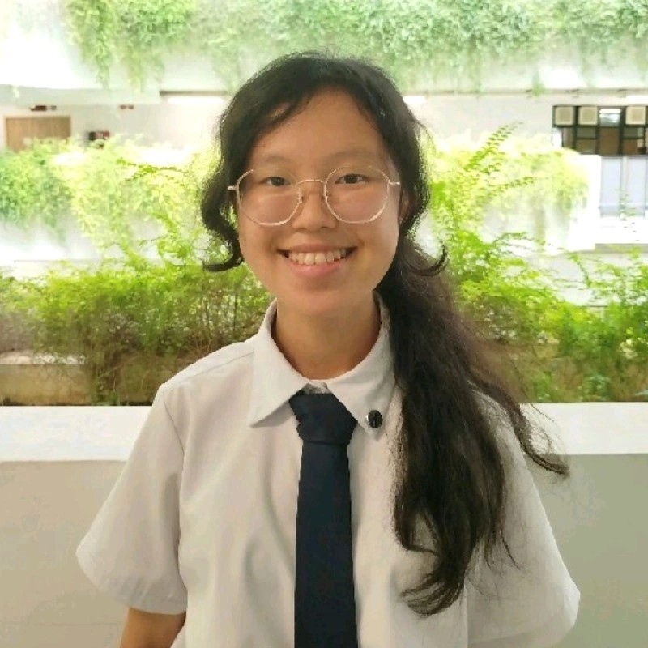

Contact me on linkedin: https://www.linkedin.com/in/jesselynchenice
Introduction
Hello! I am a recent graduate of Eunoia Junior College who is very passionate about programming, particularly data analytics!
This website contains the passion projects I have taken on in my free time, including developing this website.
Feel free to take a look around!
Contact me on linkedin: https://www.linkedin.com/in/jesselynchenice